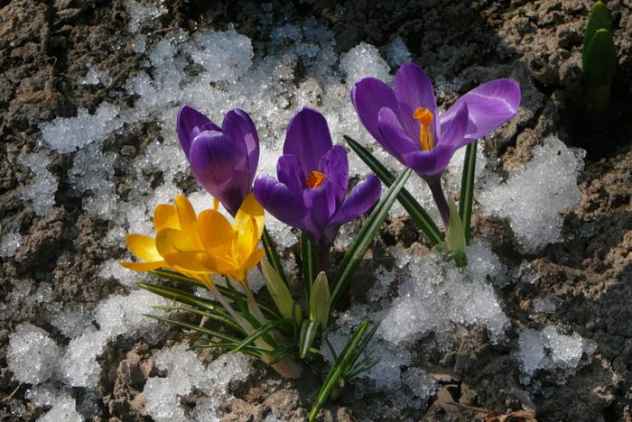
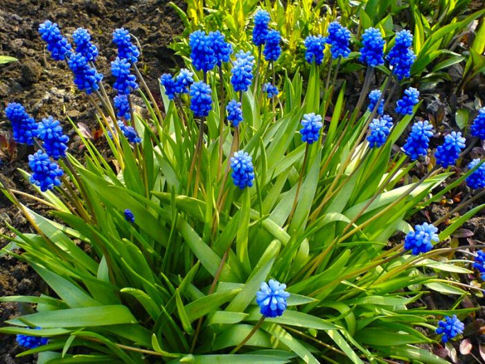

Багаторічні квіти
Проліски

Таким рослинам не страшні морози, і показуються з-під землі вони вже в перший весняний місяць. Їх рекомендується садити в безпосередній близькості від чагарників, а також дерев. Варто пам'ятати, що цвітіння у них досить нетривалий, а після його закінчення частина знаходиться над землею відмирає.
Крокуси

Розкриття таких ніжних квіточок відбувається разом з пролісками. Вони розпускаються на самому початку весни і виглядають дуже ефектно і свіжо. А щоб домогтися ще більшої ефектності, поруч можна посадити такі квіти різних забарвлень.
Мускарі

За таким рослиною не потрібно особливого догляду, і воно може розмножитися самостійно дітками. При посадці даний факт необхідно врахувати, тому що перенести таку квітку в інше місце буде вкрай складно. Рекомендується висаджувати цибулини разом з горщиком.
Весенник
Такій рослині не страшні морози і воно починає цвісти вже ранньою весною. Ці красиві квіточки насичено-жовтого забарвлення здатні зігріти душу своїм виглядом у похмурий весняний день.
Дицентра
Така багаторічна рослина має досить ефектний і не зовсім звичайний зовнішній вигляд. Догляд за ним не складе особливих труднощів, так як воно є вимогливим і некапризным.